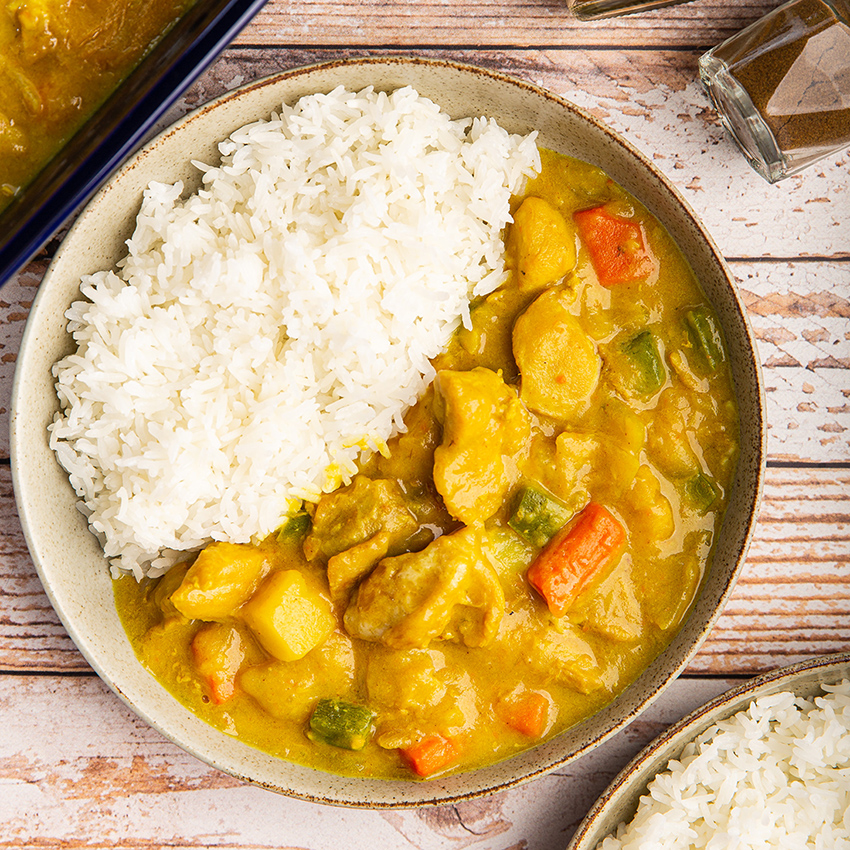
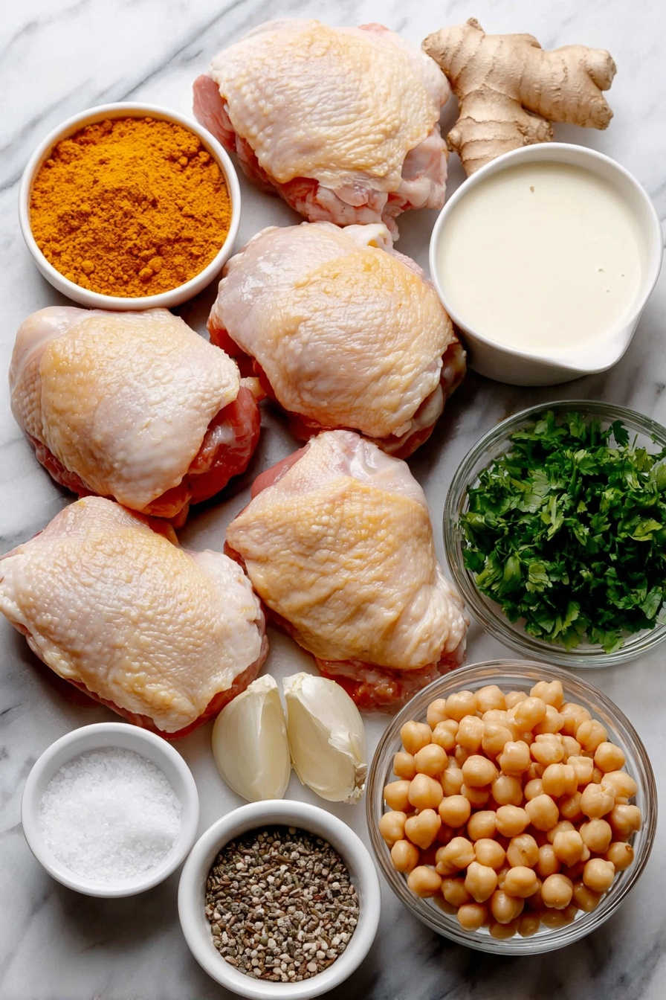
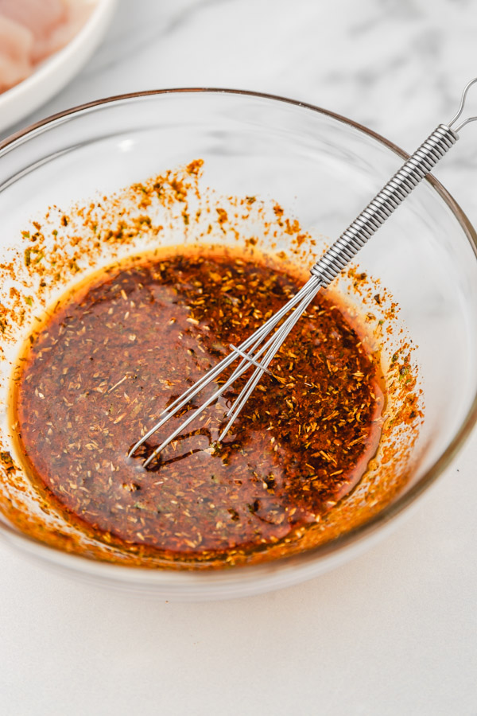
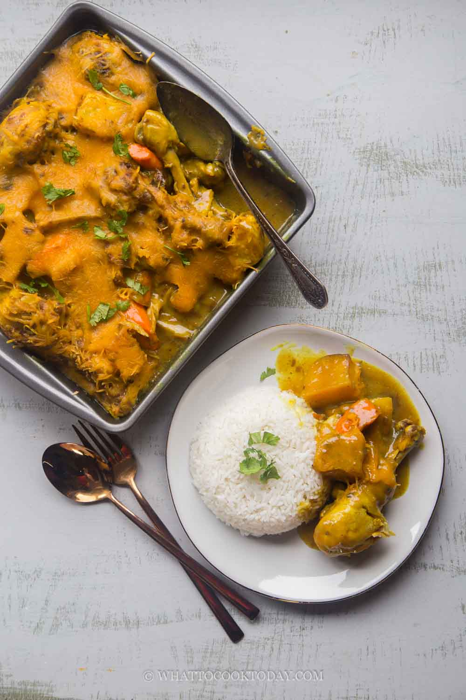
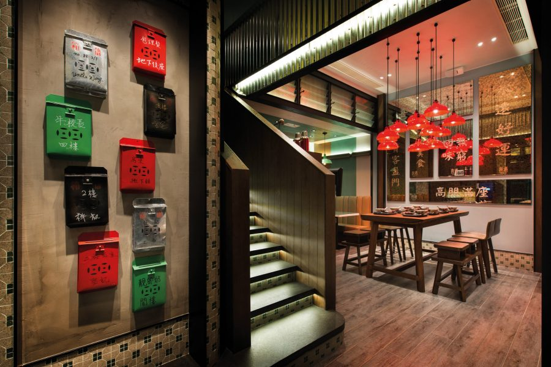

🍳 Ken's Kitchen · Recipe No. 001
Portuguese Curry Chicken — 葡國雞 — is one of those dishes that bridges cultures beautifully. Born from Macanese cuisine where Portuguese and Chinese cooking traditions met, this version is rich with coconut cream, fragrant with turmeric and curry, and finished in the oven with toasted shaved coconut for a silky, golden finish.
The secret is in the overnight marinade and the roux — two extra steps that transform a simple curry into something worth writing down and keeping forever.

Fresh ingredients laid out

Overnight marinade — the key step

Golden coconut curry finish
The Story Behind the Dish

When the Portuguese arrived in Macau in 1557, they brought centuries of maritime spice trade with them — turmeric and curry from India, coconut milk from Indonesia and Malaysia, bay leaves from Lisbon. But they couldn't find their familiar ingredients in Southern China, so they did something extraordinary: they handed their recipes to local Cantonese cooks.
The result was Macanese cuisine — recognised by UNESCO as the world's very first fusion cuisine. Portuguese Curry Chicken (葡國雞) was born from this collision: Indian spice profiles, coconut richness from Southeast Asia, Cantonese cooking technique, and the Portuguese tradition of oven-baking. A dish that exists nowhere in Portugal, yet tastes unmistakably of home to everyone who grew up in Macau or Hong Kong.
The cha chaan teng (茶餐廳) — literally "tea restaurant" — emerged in Hong Kong in the 1940s and 50s as a local answer to Western cafés. Affordable, fast, and gloriously unapologetic about mixing East and West, these bustling diners democratised food that was once only found in hotel restaurants.
葡國雞 slipped naturally onto the cha chaan teng menu. With its golden coconut curry sauce, tender chicken, and hearty potatoes, it fitted perfectly alongside milk tea and pineapple buns. From Mong Kok to Causeway Bay, it became one of those dishes every Hongkonger grew up knowing — ordered without thinking, missed fiercely when you leave.
1557
Portugal establishes Macau as a trading post — the gateway between Europe and Asia. Spices from India, Africa, and Southeast Asia flow through its kitchens.
16th–17th Century
Macanese cuisine takes shape as Portuguese settlers intermarry with local Cantonese families. Indian-inspired spices meet Cantonese technique; coconut milk replaces dairy. 葡國雞 is born.
1940s
The cha chaan teng emerges in Hong Kong — affordable cafés offering localised Western dishes. Portuguese Curry Chicken finds its way onto their menus and into everyday Hong Kong life.
1950s–80s
葡國雞 becomes a staple of Hong Kong's Canto-Western food culture, appearing in tea restaurants across Kowloon and Hong Kong Island. A generation grows up ordering it without a second thought.
1999
Portugal hands Macau back to China. Macanese cuisine — including 葡國雞 — is elevated to cultural heritage status, its unique flavour profile now officially irreplaceable.
Today
Macanese Portuguese Curry Chicken is a global comfort food, carried by the Hong Kong diaspora to San Francisco, Vancouver, London, and Sydney. Every family has their version. Every bite tells the same story.
Where to Find the Best
Macau — Taipa Village
The food street of old Taipa is lined with family-run Macanese restaurants serving 葡國雞 for generations. The version here often includes chouriço (Portuguese sausage) and black olives — closest to the original recipe.
Macau — Historic Centre
Clustered around the UNESCO World Heritage Senado Square, these restaurants serve 葡國雞 alongside Macanese classics in settings that haven't changed much since the Portuguese era. The atmosphere alone is worth the trip.
Hong Kong — Central
One of Hong Kong's most beloved Portuguese restaurants, consistently rated among the city's best. Their 葡國雞 is the benchmark for the HK interpretation — rich, coconut-forward, perfectly balanced.
Hong Kong — Various Locations
A Hong Kong institution bringing authentic Macanese flavours in an accessible format. Affordable, unpretentious, and deeply satisfying — exactly the spirit the dish was born in.
Hong Kong — Everywhere
Ask any Hongkonger where to find 葡國雞 and they'll point to their own neighbourhood cha chaan teng. The best version is always the one you grew up eating — with milk tea and a pineapple bun on the side.
San Francisco · Vancouver · Sydney
Wherever the Hong Kong and Macanese diaspora settled, 葡國雞 followed. From SF's Richmond District to Vancouver's Richmond suburb — home kitchens carry this dish as living culinary memory.
What You'll Need
How to Make It
Combine all marinade ingredients with the chicken pieces. Mix thoroughly, cover, and refrigerate overnight. Don't rush this — the sugar caramelises beautifully and the spices need time to penetrate.
Blanch the carrots in boiling salted water until just tender. Separately, pan-fry the potatoes until golden on the outside. Set both aside — they'll finish cooking in the oven.
Melt butter in a small saucepan over low heat. Whisk in flour and cook for 1–2 minutes until smooth and pale golden. Set aside. This is what gives the gravy its silky restaurant-style finish.
In a bowl or jug, whisk together turmeric powder, curry powder, chicken stock, coconut cream, and water until well combined.
Lightly pan-fry the marinated chicken pieces until golden on each side. It doesn't need to cook through — just build colour and seal in the flavour. Set aside.
Add a little oil to the same pan. Stir-fry the shallots, onion, and bell pepper over medium heat until softened and fragrant.
Pour the gravy mixer into the pan and bring to a simmer. Add the roux a little at a time, stirring over low heat until the sauce is smooth, creamy, and coats the back of a spoon.
Once the gravy is creamy, gently fold in the carrots, potatoes, and chicken. Let everything return to a simmer and get coated in that golden sauce.
Transfer everything to an oven-safe pan. Sprinkle shaved coconut evenly over the top. Bake at 400°F (200°C) for 20 minutes until bubbling and the coconut is lightly toasted.
Serve hot over steamed jasmine rice or with crusty bread to soak up every last drop of that coconut curry gravy.